England > Midlands
LUDLOW CASTLE
and LUDLOW TOWN WALLS
Ludlow Castle was built in the late eleventh century by Roger de Lacy alongside a planned town. The castle was besieged during the Anarchy, attacked by Edward II and sacked by the Lancastrians during the Wars of the Roses. Later it hosted the 'Council of the Marches', effectively serving as the capital of Wales until the late seventeenth century.
History
Gallery
Getting There
Introduction
Walter de Lacy accompanied William I on his invasion of England in 1066 and was rewarded with extensive lands in the Welsh Marches including Castle Frome and Stanton (later called Stanton Lacy). Ludlow formed part of the latter but there was no major urban settlement on the site at that time; the Domesday survey of 1086 listed a small community, Ludford, which comprised of just five households. However, the site offered strong natural defences with steep scarps on the north and west. It was also in direct proximity to the River Teme near it confluence with the River Corve. These waterways provided the primary means of movement throughout the region and accordingly Ludlow was sited at a key nodal point. All these factors made the site an ideal candidate for a castle and, although records are silent on the issue, it was almost certainly Roger le Lacy, Walter's son, who built Ludlow Castle circa-1090. The planned town was probably also laid out at this time and may have had some form of earth and timber town walls.
Early Castle
The castle was an enclosure fortification constructed upon the western end of a flat topped ridge overlooking the River Teme. It had an elliptical trace and was enclosed on the south and east sides by a deep rock cut ditch. Unusually the castle's curtain wall was built in stone from the start using the spoil from the ditch. Access into the castle was via a Gatehouse Keep on the south side whilst four towers were constructed along the north and west walls. A postern gate was integrated into the central Western tower.
The Keep was originally a Gatehouse Keep but the entrance was later blocked up.
The Anarchy
Roger de Lacy was implicated in a rebellion against William II in 1095 and fled abroad. Ludlow Castle was taken into Royal ownership and later granted to Joce de Dinan who still held it in 1139 upon the outbreak of the Anarchy, the civil war between Stephen and Matilda over the English succession. Joce supported Matilda's claim and accordingly Ludlow Castle was unsuccessfully besieged by Stephen in 1139. During this action a grappling hook was thrown from the castle and managed to snare Prince Henry of Scotland, who was serving in Stephen's army. It was only due to rapid action by the King himself that prevented the Prince being hoisted into the castle and ransomed.
Expanded Castle
Gilbert de Lacy eventually recovered Ludlow Castle and held it until his death in 1163 and it then passed to his son, Hugh. One of these individuals greatly expanded the castle by creating an Outer Bailey. This occupied a broadly rectangular footprint and required a portion of the town to be flattened to make space. The original enclosure castle occupied the north-west corner and now became the Inner Bailey. The original Gatehouse Keep was modified into a Great Keep with the entrance passage blocked up and a new access cut through the curtain wall. However, Hugh's activities in Ireland prompted Henry II to take Ludlow Castle back into Royal control in the 1180s. Hugh died in 1186 and was followed by his son, Walter, but it took until 1216 before he recovered Ludlow from the King. Like his father, he had a turbulent relationship with the Crown and Ludlow Castle was periodically confiscated. In 1224, during one such period of Royal control, the castle hosted the peace negotiations between Henry III and Llywelyn ap Iorwerth (the Great).
Town Walls
In 1233 Henry III granted Ludlow murage, the right to raise taxes for the purpose of funding fortifications. This tax paid for the rebuilding of the town wall in stone. The walls enclosed a broadly rectangular area of around 65 acres with the castle in the north-west corner and the River Teme on the west and south sides. The River Corve provided protection to the north. Seven gates provided access into the town with Broad Gate, on the south side, leading to the medieval bridge over the River Teme. Work continued on the Town Walls for over a century with the circuit finally completed in the fourteenth century.
Work started on the town walls in the thirteenth century.
Mortimer
The castle was back in de Lacy hands by 1241 when Walter died without a male heir. Thereafter it passed through marriage to Geoffrey de Grenville who also died leaving no male heir. Ludlow Castle then passed through marriage to Roger Mortimer (later Earl of March). He was already a powerful border magnate whose caput was at Wigmore Castle in Herefordshire but the acquisition of Ludlow Castle strengthened his power base. In 1322, due to dissatisfaction with the weak and ineffectual Government of Edward II, Mortimer joined the rebellion of the Earl of Lancaster against Edward II. The uprising failed and Ludlow Castle was attacked by Royalist forces. Mortimer was also captured and imprisoned in the Tower of London . However, he successfully escaped and in 1326 rebelled again. This revolt was successful and Edward II was deposed (and then probably murdered in Berkeley Castle ). For a few years Mortimer was effectively defacto ruler of England until his own downfall at the hands of Edward III. Despite Mortimer's treasonable actions, Ludlow Castle remained the property of his heirs.
Wars of the Roses
The last male Mortimer died in 1425 and the castle passed to Richard Plantagenet, Duke of York. The weak and ineffective Government of Henry VI afforded Richard the opportunity to make a bid for the Crown starting the dynastic struggle that is now known as the Wars of the Roses. The First Battle of St Albans (1455) set the tone for the rest of the war and in 1459, to demonstrate that Richard was unable to protect his kinsmen, a Lancastrian force attacked Ludlow. The Yorkist force there was under the command of Sir Andrew Wallop but, as the Lancastrians approached, he defected causing chaos amongst his former charges. Many fled leaving Ludlow, both castle and town, to be sacked by the Lancastrians. They gave no quarter treated it as if it were a vanquished foreign town. Richard was killed the following year at the Battle of Wakefield (1460) but his son, Edward, successfully defeated the Lancastrians at the Battles of Mortimerâs Cross (1461) and Towton (1461) and became Edward IV.
Council of the Marches
In 1473 Edward IV sent his three year old son, Prince Edward, to be brought up at Ludlow Castle under the care of his brother-in-law, Anthony Woodville, Earl Rivers. At the same time he formed the Princeâs Council which later became the âCouncil of the Marchesâ and vested it with powers over Wales and the border region. Prince Edward was still resident at Ludlow in 1483 when Edward IV died unexpectedly. The young Prince, who was now Edward V, departed from the castle on his way to London for his coronation. However, he was intercepted by his uncle Richard, Duke of Gloucester and subsequently deposed. He was later accommodated in the Tower of London , one of the 'Princes in the Tower' whose fate remains uncertain.
The arrival of the Tudor dynasty in 1485 started to herald changes in the English/Welsh relationship. Henry VII was keen to centralise power and started dismantling the historical framework of the Marcher Lords, barons who had previously been entitled to raise their own armies and exercise quasi-Regal authority. However, the 'Council of the Marches' was retained and in 1493 Henry sent his own eldest son, Prince Arthur, to be brought up at Ludlow although after the young Princeâs death in 1502 the post was left vacant. In 1534 Henry VIII strengthened the powers of the âCouncil of the Marchesâ and appointed Rowland Lee, Bishop of Coventry to the post. This effectively made Ludlow the capital of Wales and this prompted a flurry of building work within the castle to support the legal, administrative and ecclesiastical functions associated with such a role. Ludlow remained the centre of Welsh politics until 1641.
Civil War and Decline
During the Civil War Ludlow was held by the Royalists. Both castle and town were besieged by a Parliamentary force under Colonel John Birch in 1646. After some skirmishing, both were surrendered and subsequently avoided slighting. After the Restoration the 'Council of the Marches' was briefly restored but was abolished again in 1689 and thereafter the key functions of Government were increasingly centralised in London. Ludlow Castle drifted into disuse and ruin with material robbed to maintain buildings across the town. In 1771 it was leased to the Earl of Powis and it was purchased outright in 1811.
Bibliography
Adamson, J (2007). The Noble Revolt . Orion, London.
Armitage, E.S (1904). Early Norman Castles of the British Isles . English Historical Review Vol 14 (Reprinted by Amazon).
Creighton, O.H (2002). Castles and Landscapes: Power, Community and Fortification in Medieval England . Equinox, Bristol.
Douglas, D.C and Greeaway, G.W (ed) (1981). English Historical Documents Vol 2 (1042-1189) . Routledge, London.
Douglas, D.C and Rothwell, H (ed) (1975). English Historical Documents Vol 3 (1189-1327) . Routledge, London.
Douglas, D.C and Myers, A.R (ed) (1975). English Historical Documents Vol 5 (1327-1485) . Routledge, London.
Faraday, M.A (1991). Ludlow 1085-1660 .
Goodall, J (2011). The English Castle 1066-1650 . Yale University Press.
Harvey, A (1911). Castles and Walled Towns of England . London.
Lloyd, D (2012). Ludlow Castle .
Shoesmith, R and Johnson, A (2000). Ludlow Castle .
Wrightman, W.E (1966). The Lacy family in England and Normandy, 1066-1194 .
What's There?
Visit Official Website
Ludlow Castle is arguably the most impressive castle in the Welsh Marches. Although ruinous, much of the fortress survives including the Keep, which stands to its full height, and a rare example of circular chapel.
Ludlow Castle and Town Walls . The castle occupied a spur of high ground overlooking the River Teme. The Inner Bailey was created first and originally was a standalone enclosure fortification. The town was founded shortly afterwards but a small portion of it was flattened when the castle's Outer Bailey was built in the late twelfth century.
Outer Gatehouse . The Outer Gatehouse dates from the late twelfth century but has been extensively altered in later years.
Gatehouse Keep . Prior to the expansion of the castle in the late twelfth century, the entrance into the fortification was via the Gatehouse Keep. This was a relatively unusual arrangement with only a handful of other surviving examples, most notably at Exeter and Richmond castles. The structure was heightened to four storeys in the early twelfth century. After the Outer Bailey was constructed, the entrance archway was blocked up and a new archway was cut through the curtain wall.
Inner Bailey Entrance . This entrance replaced the access through the Gatehouse Keep in the late twelfth century. It was narrowed in the fourteenth century.
Round Chapel . The chapel of St Mary Magdalene is a rare surviving example of a twelfth century church with a circular nave. Its design imitated the church of the Holy Sepulchre in Jerusalem.
Ludlow Castle . The castle as viewed from the RIver Teme.
Broad Gate . This gate is the only one of Ludlow's seven medieval gates to survive. It is flanked by D-shaped towers. The upper storeys have been heavily modified and predominantly date from the eighteenth century.
Ludford Bridge . The current bridge dates from the fifteenth century and replaced an earlier structure. The road led up the hill to Broad Gate.
Mill Gate (Site of) .
Dinham Gate (Site of) .
Linney Gate (Site of) .
Corve Gate (Site of) .
Galdeford Gate (Site of) .
Old Gate (Site of) .
Town Walls . Significant sections of the town wall survive but the remains have been heavily modified.
Ludlow Castle is a major tourist attraction and is well sign-posted. There are ample car parking options near the castle entrance with one option shown below.
Car Parking Option
SY8 1AT
52.368075N 2.720827W
SY8 1AY
52.367208N 2.722326W
Section of Town Wall
St John's Street, SY8 1PG
52.365974N 2.716277W
Broad Gate
Lower Broad Street, SY8 1PQ
52.365181N 2.717951W
Ludford Bridge
Lower Broad Street, SY8 1PH
52.363823N 2.717260W
(c) Copyright 2019 CastlesFortsBattles.co.uk
Recovered original photographs, plans and images
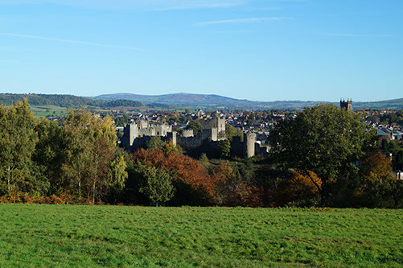
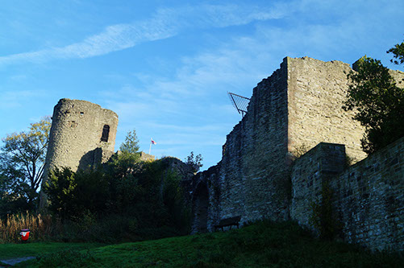
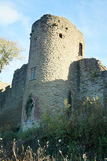
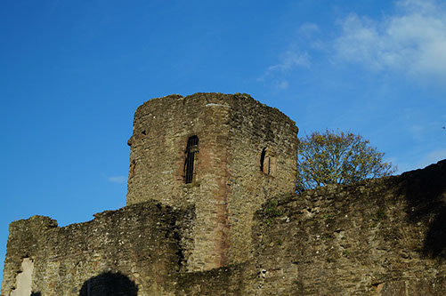
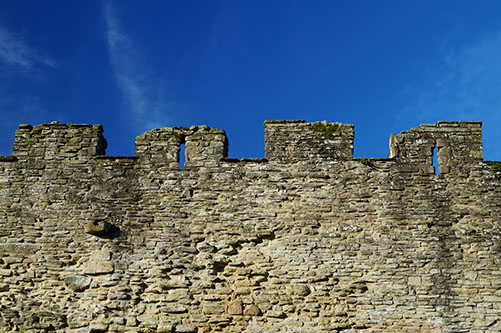
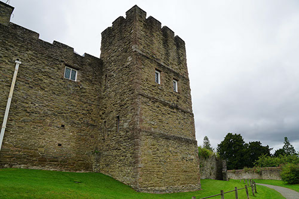
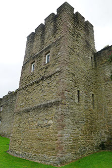
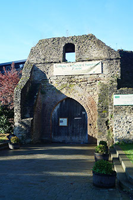
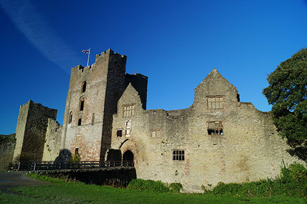
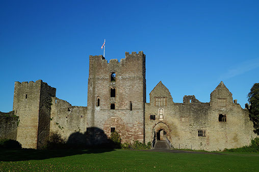
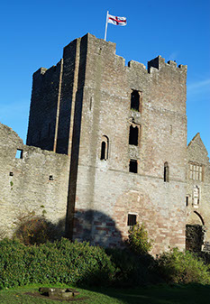
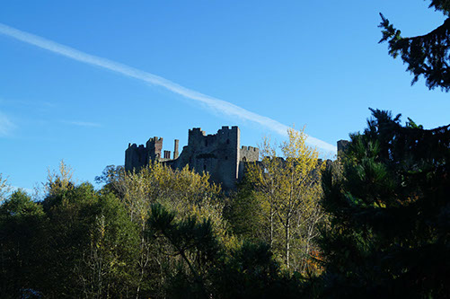
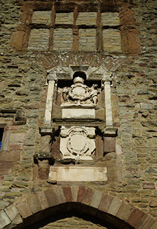
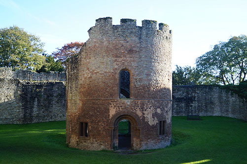
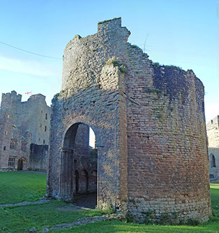
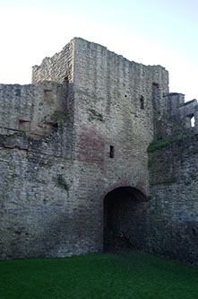
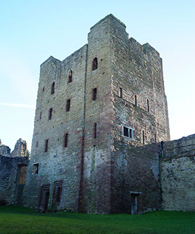
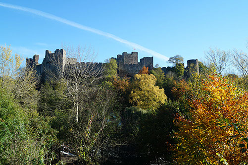
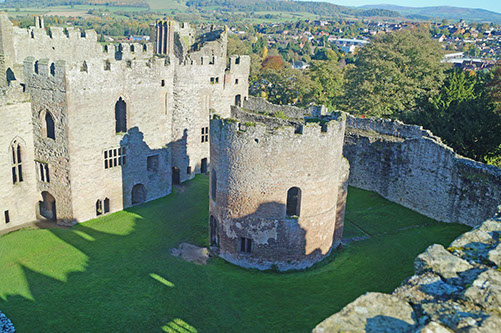
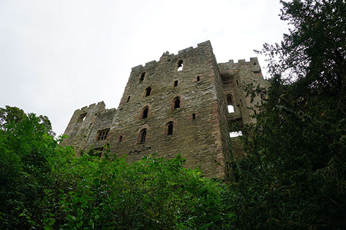
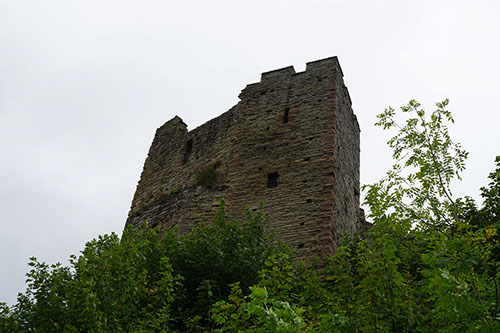
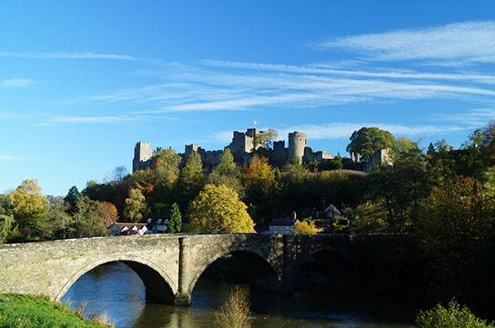
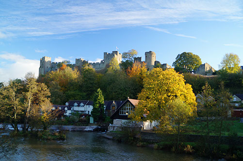
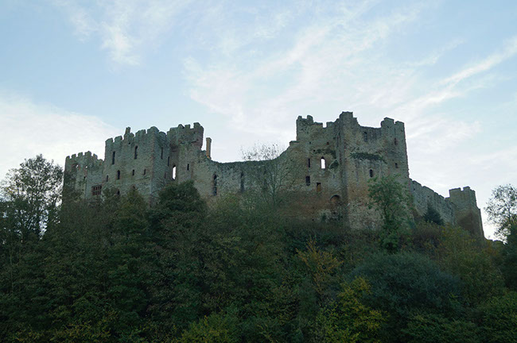
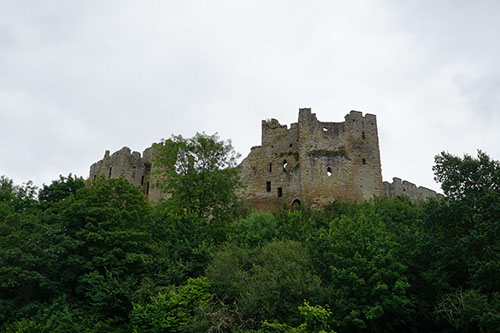
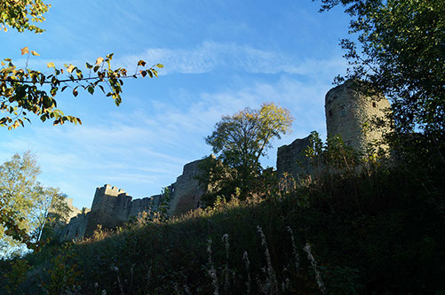
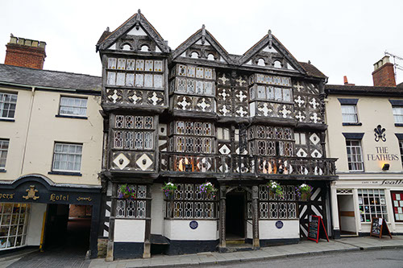
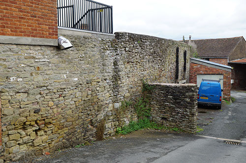
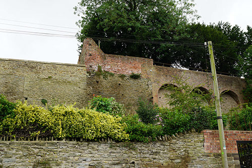
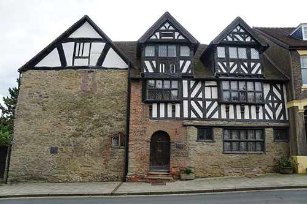
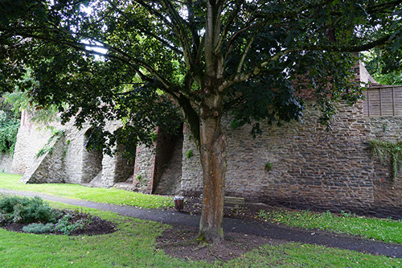
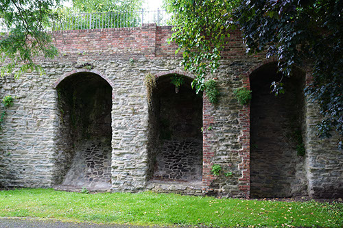
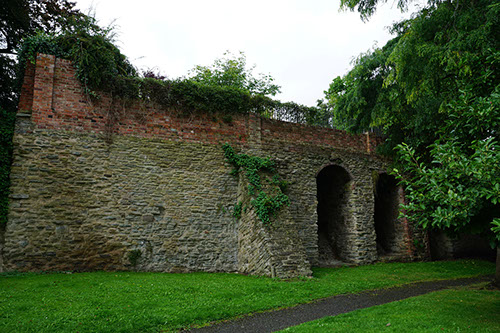
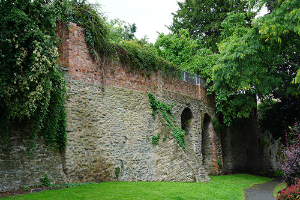
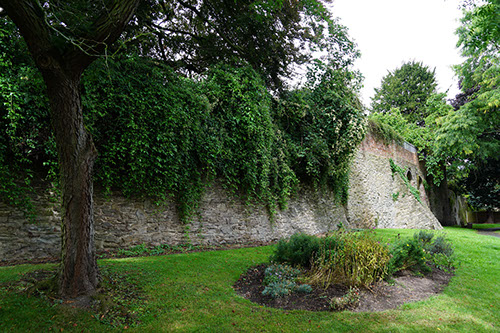
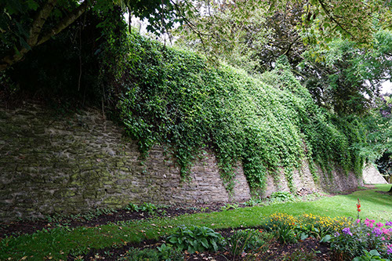
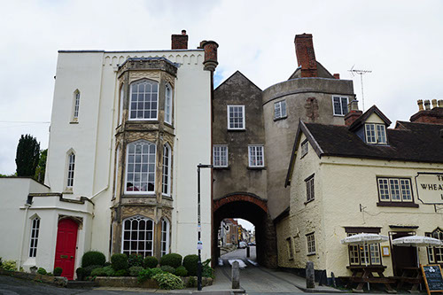
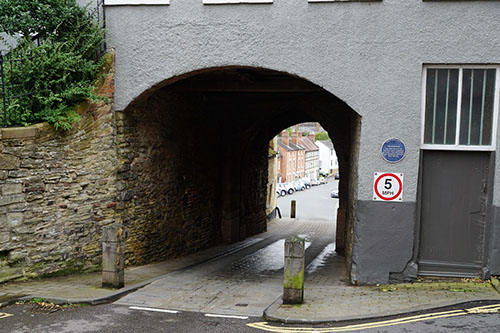
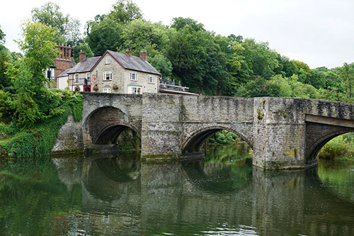
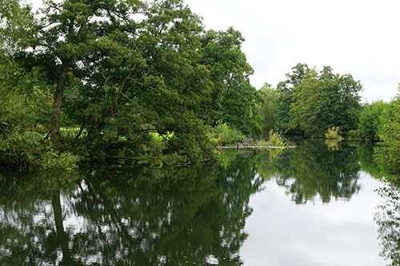
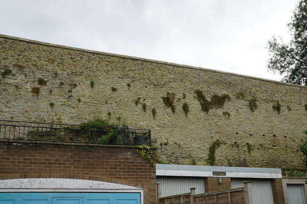
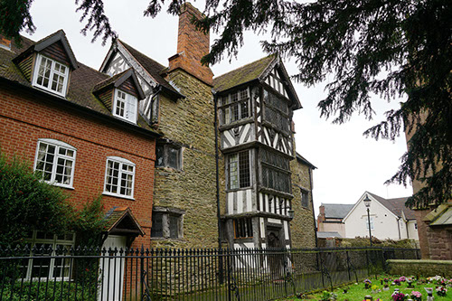